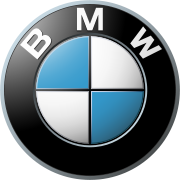

Înaintea celui de-al doilea razboi mondial
BMW, acronimul pentru Bayerische Motoren Werke AG (în traducere în română Uzina Bavareză de Motoare SA), este un producător german de automobile, motociclete și motoare. BMW este o companie germană organizată ca societate pe acțiuni, înregistrată în DAX la Bursa din Frankfurt.
În anul 2010, BMW Group a înregistrat cel mai bun an din istorie, cu un total de 1,46 de milioane de livrări, din care 1,22 de milioane de BMW și 234.175 de MINI.
Sigla alb-albastră folosită până în prezent, utilizează aceleași culori ca ale steagului Bavariei, sugerând simultan o elice albă care se rotește având ca fundal un albastru similar cu cel al cerului. Originile cadranelor albe și albastre din sigla BMW nu au nimic de-a face cu o elice. În schimb au de-a face cu culorile naționale ale landului Bavaria, care este desigur inclus în numele companiei.
Se pare că mitul elicei a fost rezultatul unor publicații tehnice din anii 1920 ce furnizau informații despre serviciile oferite pentru motoarele de avioane BMW.

Când BMW a luat ființă din compania Rapp (sigla celor de la Rapp era reprezentată de un cerc având în centru capul unui cal negru), au refolosit cercul, și au inserat în centru o imagine în oglindă a culorilor naționale ale Bavariei. Albul și albastrul au fost inversate în cerc față de poziția lor pe steagul bavarez, datorită considerentelor legale legate de utilizarea acelui simbol național în cazul unei mărci comerciale. Dar corespondența dintre numele companiei și imaginea din logo a continuat.
Grila frontală caracteristică, de forma „rinichi dublu”, a fost prima dată folosită la modelul BMW 303, la începutul anilor 1930.
Firma BMW, este una din marile firme de automobile la nivel mondial, având ca subdivizii ale sale alte companii producătoare de automobile, cum ar fi: BMW MINI și Rolls-Royce. Marca britanică Rover a fost (1994 - 2000) parte a concernului. Formula 1: BMW Sauber, Williams.
Sloganul german original al firmei este „Freude am Fahren”, ceea ce se traduce liber prin: Plăcere la condus, Plăcere la volan, în engleză: „The Ultimate Driving Machine”, ceea ce se traduce aproximativ prin: Cea mai sofisticată / Ultima mașină de condus.